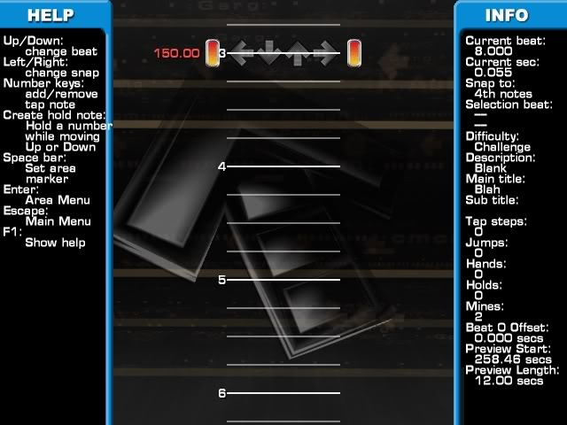

Hello everyone, and welcome to WinDEU's Negative BPM tutorial! Making negative
BPMs is pretty complex, so hopefully this guide will help you guys out.
NOTE: I am using
SM 3.95 for this tutorial. 3.9 works as well, and is probably better to use
for playback purposes. When a negative BPM hits in edit mode, 3.95 jumps very
quickly (but not instantly) to the next point in the chart, whereas 3.9 does
do it instantly.
What are negative BPMs?
Negative BPMs are the act of "warping" to a
later place in the chart, skipping multiple lines of the chart and
ignoring anything within those areas.
Once you understand how negative BPMs work, it shouldn't be too hard to
figure out.
So, let's start out with a screenshot.

We start off on measure 1, with a current second of 0.055, and a BPM of 150.
Take note of the current second (upper right), this is very important in
dealing with negative BPMs.

We are now on measure 2, with a BPM of -150, the exact opposite of the normal
BPM. Look at the current second again. It took 1.600 seconds to scroll 1
whole measure at 150 BPM. Right now the current second is 1.655. Also of
note, the BPM goes back to 150 starting on measure 3. Now, here's where the
magic happens.

We are on measure 3, back into positive BPM territory, but take a look at the
current second again. It is 0.055 on measure 3, the same value as the current
second from measure 1. This makes sense, because it took -1.600 seconds to
scroll from measure 2 to measure 3, because the BPM was negative during that
measure.

As you can see from the current second on measure 4, it is the same value as measure 2.
This is how the warping happens. When the chart first reaches the negative BPM,
it will search for the next positive BPM value.
NOTE: if there is no
positive BPM after the last negative BPM, I believe that the song ends
instantly, because it has reached the highest time possible within the chart.
Once the negative BPM hits, the current second will start counting backwards
forever.
So, once the negative BPM hits, the game attempts to find the next place in
the chart that matches the current second of
the exact moment the negative BPM hit. At measure 2, the current second
was 1.655, and from the picture above, we can see that the next place that the
current second is 1.655 would be measure 4. So, you've effectively created a
warp going from measure 2 to measure 4, skipping everything in between.

So basically, it comes down to this: When making negative BPMs, make sure that
the space between the negative BPM and the next positive BPM is
doubled (assuming that you're using
the same BPM, which would be the easiest method anyway).
Negative Stops
Negative stops work about the same way as negative BPMs, without the mess
of having to change around the BPMs. There is a little math involved, though.
Let's say that you want to do a 2-measure warp, like the negative BPM example
above. You need to simulate going backwards by two measures. Normal stops keep
the current second going, even though the chart is at a standstill. Negative
stops keep the current second going as well, only backwards.
First, find the time it would take to progress two measures. You can do this
by either checking the current second, going down two measures, check the
current second again, and take the difference. Or, you can calculate it like this:
60/[BPM] = [quarter note value, in seconds]
[quarter note] x 8 = [2 measures, in seconds]
So that translates to:
60/150 = 0.400
0.400 x 8 = 3.200 seconds = two measures
Now that we've got that out of the way, it's time to make the negative stop.
You might have noticed something though. StepMania doesn't let you input
negative stops. F9 to decrease the stop values in edit mode doesn't let you
go below 0.00, and adding a negative stop through Add Stop from the menu
doesn't work either.
Unfortunately, you'll have to manually insert the negative stop into the .sm
file. NOTE: Before you
manually insert any negative stops, make sure to save your chart, otherwise
any unsaved data will be lost!
This time, take note of the current beat
(again, upper right). Now, open up the .sm file and look for the #STOPS tag.
If you want to add a -3.200 long stop in at measure 2, it will look like this:
#STOPS:4.000=-3.200;
After you're done, save the .sm, and go back to StepMania (which should still
be open). Press ESC, and go to the menu option "Revert From Disk." It will
warn you that any unsaved changes will be lost (which is why I gave the warning
before explaining all of this). Choose yes, and you should see the negative
stop value appear on measure 2.

If you scroll to measure 2, and then to measure 4, you will see that the
current second values are the same, meaning that you've successfully created
a warp with negative stops!
NOTE: Using a lot of
negative stops in a short period of time tends to lag ITG machines a lot,
so be wary of this.
That covers the basics of negative BPMs and negative stops. Hopefully this guide helps!